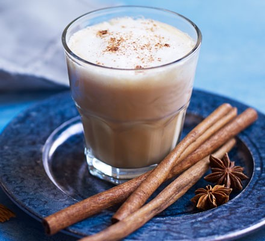

A chai latte is made by mixing steamed milk with black tea that has been infused with spices. The drink is then topped with foam. The spices used will vary from café to café; some coffee shops create signature chai blends and keep the ingredients a secret.